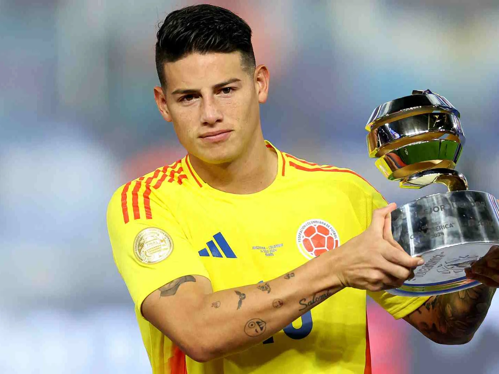

Nombre oficial: Selección Colombia
Confederación: CONMEBOL
Capitán: James Rodríguez
Director Técnico: Néstor Lorenzo
Primera participación mundialista: 1962
Ranking FIFA: Entre las mejores selecciones de Sudamérica
• Colombia es una de las selecciones más destacadas de Sudamérica y ha participado en varias Copas del Mundo, caracterizándose por su fútbol técnico y ofensivo.
• Su mejor actuación mundialista llegó en Brasil 2014, cuando alcanzó los cuartos de final y sorprendió al mundo con grandes actuaciones.
• A lo largo de su historia, Colombia ha contado con figuras legendarias como Carlos Valderrama, Faustino Asprilla y James Rodríguez, consolidándose como una potencia regional.
| Estadística | Datos |
|---|---|
| Participaciones | 6 |
| Títulos Mundiales | 0 |
| Mejor Resultado | Cuartos de final (2014) |
| Última Participación | 2018 |
| Semifinales Alcanzadas | 0 |
| Confederación | CONMEBOL |
1962 • 1990 • 1994 • 1998 • 2014 • 2018 • 2026

Capitán histórico de Colombia y uno de los mejores mediocampistas sudamericanos.

Máximo goleador del Mundial 2014 y figura de la generación más exitosa de Colombia.

Delantero talentoso que brilló con Colombia durante la década de los noventa.